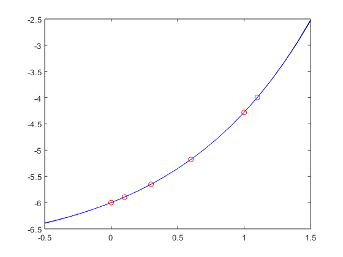
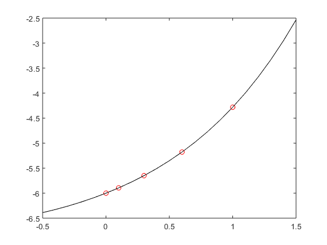

Contents
Problem 1
Use divided differences to construct the interpolating polynomial of degree four for the following data:
% x | f(x) % --------------- % 0.0 | -6.00000 % 0.1 | -5.89483 % 0.3 | -5.65014 % 0.6 | -5.17788 % 1.0 | -4.28172 fprintf('Problem 1\n') % create input and output data vectors inData = [0.0, 0.1, 0.3, 0.6, 1.0]; outData = [-6.00000, -5.89483, -5.65014, -5.17788, -4.28172]; %Intialized divided differences matrix inFij = InitializeFij(outData); % Generate divided differences matrix startRow = 2; inFij = GenerateFij(inData, inFij, startRow); % Create set of xVals in -0.5..1.5 xVals = [-0.5:0.1:1.5]; % Evaluate the interpolating polynomial at each xVals yVals1a = CalcInterPoly(inFij, inData, xVals); % Plot original data points and the interpolating polynomial on same graph figure(1) plot(inData, outData, 'ro') hold on plot(xVals, yVals1a, 'k-') % 1b) Calculate f(0.9) using interpolating polynomial inVec = [0.9]; fof0point9 = CalcInterPoly(inFij, inData, inVec); fprintf('Using the interpolating polynomial, f(0.9) is approximately %.6f\n', fof0point9); % Problem 1c % Add f(1.1) = -3.99583 to data set % Define vector for additional input data addInData = [1.1]; % Update inData vector with additional input data vector inData = [inData, addInData]; % Define vector for additional output data addOutData = [-3.99583]; % Update inData vector with additional output data vector outData = [outData, addOutData]; % get size of additional output data vector sizeOfAddOutData = length(addOutData); % get size of Fij [row, col] = size(inFij); % append the additional output data to the end of Fij inFij(row+1:1:row + sizeOfAddOutData,1) = [addOutData]'; %Fill in Fij for additional Data startRow = row + 1; inFij = GenerateFij(inData, inFij, startRow); % Calculate new yVals based on new interpolating polynomial yVals1c = CalcInterPoly(inFij, inData, xVals); % Plot origdata points and both interpolating polynomials on same graph figure(2) plot(inData, outData, 'ro') hold on plot(xVals, yVals1a, 'k-') hold on plot(xVals, yVals1c, 'b-')
Problem 1
Problem 2
The fastest time ever recorded in the Kentucky Derby was by a horse named Secretariat in 1973. He covered the 1 1\4 mile track in 1:59.4 (one minute and 59.4 seconds). Times at the quarter-mile, half-mile, and mile poles were 0:25.2, 0:49.2, and 1:36.4. Use interpolation to predict the time at the three-quarter mile pole and compare this to the actual time of 1:13.
% distance (mile) | time (s) % ------------------------------ % 0.00 | 0.0 % 0.25 | 25.2 % 0.50 | 49.2 % 1.00 | 96.4 % 1.25 | 119.4 fprintf('Problem 2\n'); % Define vectors for distance and time distance = [0, 0.25, 0.5, 1, 1.25]; time = [0, 25.3, 49.2, 96.4, 119.4]; % Order of data based on proximity to 0.75 miles indexArray = [3, 4, 2, 5, 1]; % Sort arrays based on index distanceSorted = distance(indexArray); timeSorted = time(indexArray); % Initialize Fij using timeSorted array inFij = InitializeFij(timeSorted); % Generate divided differences matrix using distanceSorted array startRow = 2; Fij = GenerateFij(distanceSorted, inFij, startRow); % Approximate time(0.75 miles) inVec = 0.75; approxTime = CalcInterPoly(Fij, distanceSorted, inVec); fprintf('The time at 0.75 miles is approximately %.1f\n', approxTime); % The actual time at 0.75 miles was 73 seconds according to the homework actualTime = 73; % Relative error between actual time compared to approximate time relError = (abs(actualTime - approxTime) / actualTime) * 100; fprintf('The relative error between %.1f seconds and %.1f seconds is %.2f%%\n', ... actualTime, approxTime, relError);
Problem 2
Problem 3
The following function data represents points on a polynomial (see below comment block). Use divided differences to determine the degree of the polynomial.
% x | f(x) % ------------------ % 0 | 0 % 1 | -2 % 2 | -8 % 3 | 0 % 4 | 64 % 5 | 250 % 6 | 648 % 7 | 1372 fprintf('Problem 3\n'); % Create vectors for the inputs and outputs of function f xVec = [0:1:7]; fofx = [0, -2, -8, 0, 64, 250, 648, 1372]; % Initialize divided differences matrix inFij = InitializeFij(fofx); % Generate divided differences matrix startRow = 2; Fij = GenerateFij(xVec, inFij, startRow); % Use real in conjunction with sym to creat a symbolic variable x that % represents a real number. Otherwise, the dot function in CalcInterPoly % returns conj(x) instead. Since I don't know if this divided differences % works the same way with complex numbers, I'm doing this to be safe. x = real(sym('x')); % Use expand to multiply out all of the products in each summand and add % them together to get a single polynomial. Use matlabFunction to make this % expression a function of x. interPoly = matlabFunction(expand(CalcInterPoly(Fij, xVec, x))) fprintf('According to the output, this is a 4th degree polynomial\n') % Check that the symbolic interpolating polynomial interpolates data interPolyResults = interPoly(xVec); checkMatrix = [fofx; interPolyResults] % visual check by leaving off ;
Problem 3
Local Helper Functions
+++++++++++++++++++++++++++++++++++++++++++++++++++++++++++++++++++++++++
Make Coefficient Vector
function coeffVec = MakeCoeffVec(inputMatrix) % This function take a square matrix as its input (in this case, the % divided differences matrix) and returns a row vector containing all of % the entries along the princple diagonal % % INPUT: inputMatrix - square matrix % OUTPUT: coeffVec - row vector containing entries allong principle % diagonal of square [numRowFij numColFij] = size(inputMatrix); n = numRowFij; % make coefficient vector coeffVec = []; for i = 1: n coeffVec(i) = inputMatrix(i,i); end end
Using the interpolating polynomial, f(0.9) is approximately -4.540223
The time at 0.75 miles is approximately 72.8 The relative error between 73.0 seconds and 72.8 seconds is 0.26%
interPoly =
function_handle with value:
@(x)real(x).^3.*-3.0+real(x).^4
According to the output, this is a 4th degree polynomial
checkMatrix =
Columns 1 through 6
0 -2 -8 0 64 250
0 -2 -8 0 64 250
Columns 7 through 8
648 1372
648 1372
Calculate output of Divided Difference Interpolating Polynomial
function approxVec = CalcInterPoly(Fij, inData, inVec) % This function computes the approximated output of the interpolating % polynomial given a divided difference matrix (Fij), the set of input % data used to in generating Fij, and the input at which the user would % like to evaluate the interpolating polynomial % % INPUT - Fij: divided differences matrix % inData: input values used in the generation of Fij % inVec: vector of inputs at which to evaluate the interpolating % polynomiat % OUTPUT - approximation: vector containing approximations for inVec % Make Coefficient Vector coeffVec = MakeCoeffVec(Fij); approxVec = []; for i = 1: length(inVec) % row vec [1,(x-x0),(x-x0)(x-x1),..,(x-x0)(x-x1)..(x - xnMinus1)] prodVec = [1]; for m = 2: length(inData) prodVec = [prodVec, (inVec(i) - inData(m - 1)) * prodVec(m -1)]; end approximation = dot(prodVec, coeffVec); approxVec = [approxVec, approximation]; end end
Initialize Divided Differences Matrix F(n,n)
function initFij = InitializeFij(outVals) % This function creates a zero matrix and then replaces the first column % with the data in the output vector. % INPUT - outVals: the output values from the data set % OUTPUT - initFij: initialized divided difference matrix with first % column being the output data set and the rest being zeros i = length(outVals); initFij = zeros(i,i); for m = 1: i initFij(m,1) = outVals(m); end end
Generate Divided Differences Matrix F(n,n)
function Fij = GenerateFij(inVals, inFij, startRow) % This function polpulates the divided difference matrix using the input % values and some initial divided difference matrix. The initial divided % difference matrix does not have to be the one generated by InitializeFij. % The algorithm will start on the specified row. % INPUT - inVals: input values from data set % inFij: initial divided differences matrix % startRow: tells the algorithm where to start % OUTPUT - Fij: completed divided differences matrix i = length(inVals); Fij = inFij; for i = startRow: i xi = inVals(i); for j = 1: i-1 xiMinusj = inVals(i-j); Fij(i, j+1) = (Fij(i,j) - Fij(i-1, j)) / ( xi - xiMinusj ); end end end